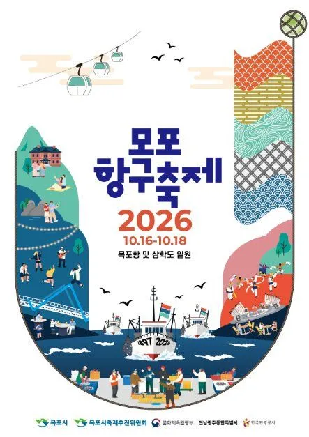
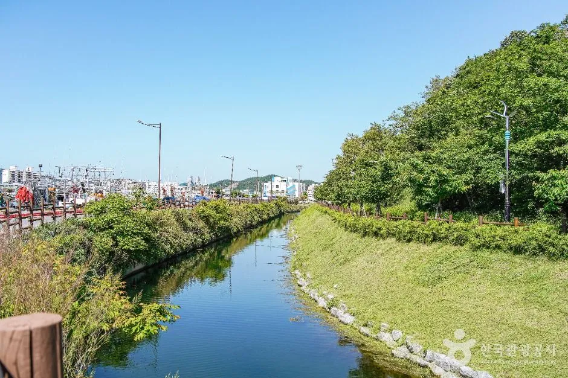
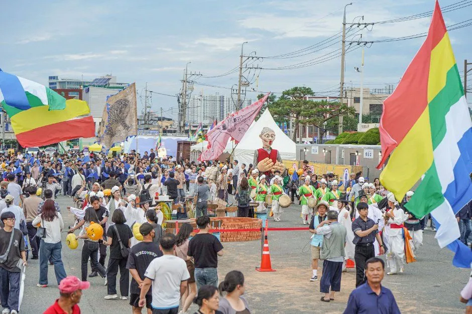
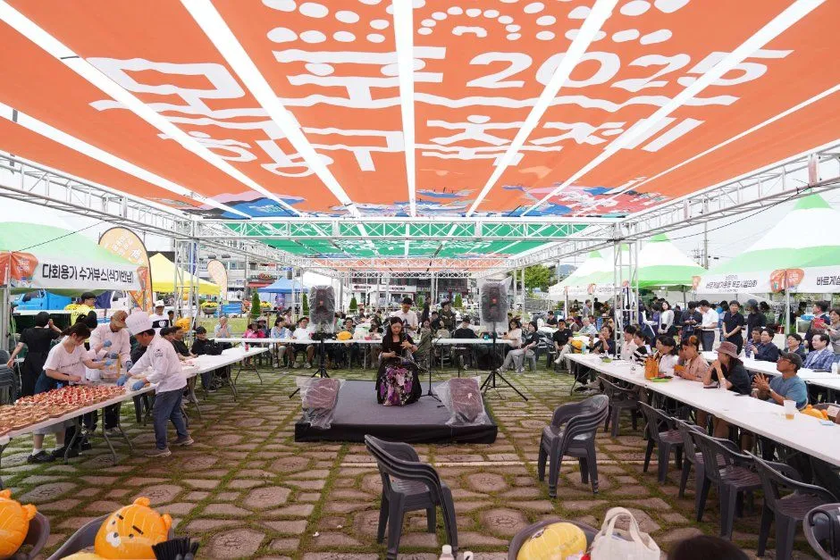
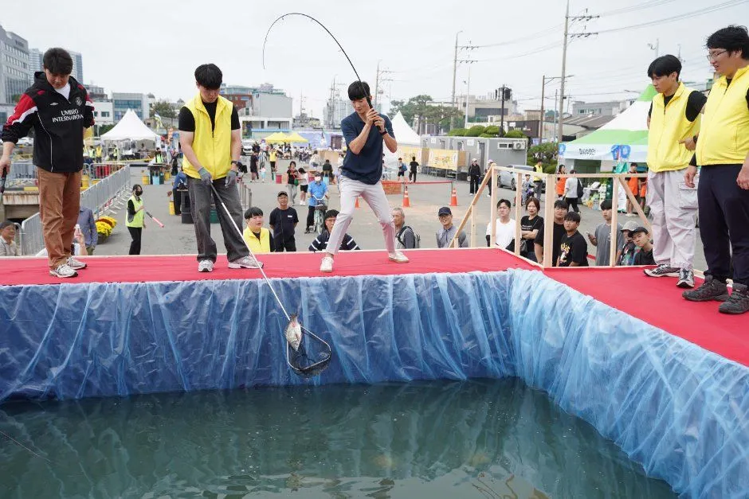
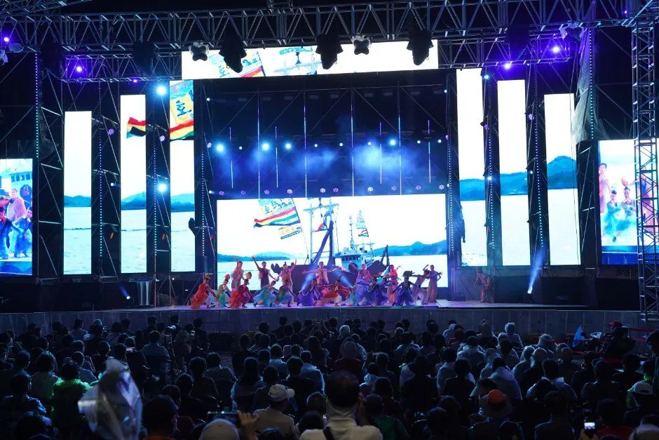
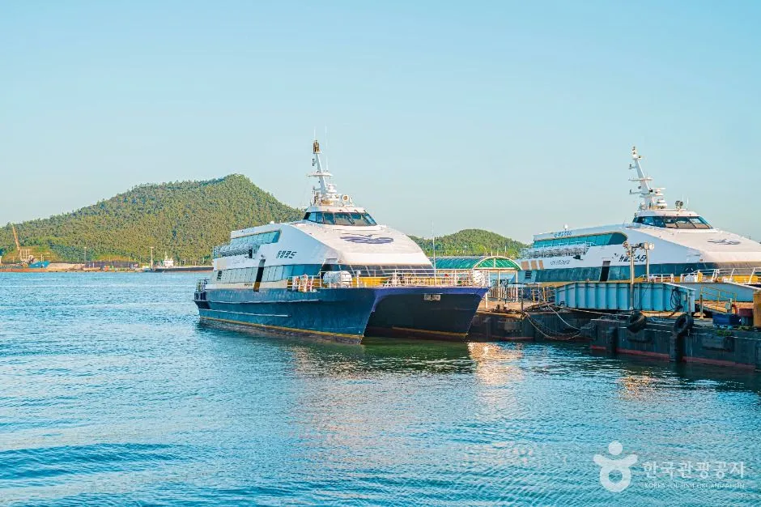

▲ 목포항구축제의 대표 프로그램인 파시 경매. 이전 개최 때 사진이다. 사진=한국관광공사
"파시(波市)를 축제로 되살린다면 어떤 모습일까?" 2026 목포항구축제가 10월 16일부터 18일까지 사흘간 목포항과 삼학도 일원에서 열린다. 올해 슬로건은 "파시의 기억, 만선의 기쁨"이다. 파시는 고기잡이철 바다 위나 포구에 서던 임시 어시장을 뜻하는데, 목포시는 1897년 개항 이후 물류·교역 도시였던 역사를 오늘의 축제로 풀어낸다고 소개한다. 이 글은 자차로 가는 사람이 알아야 할 이동·주차와 프로그램을 공식 누리집과 보도를 바탕으로 정리했다. 축제까지 열흘 남짓 남은 시점이라 임시주차장 목록과 교통통제 구간은 아직 확인하지 못한 항목으로 따로 표시했다.
1. 한눈에 보기 — 일정·장소·요금
| 항목 | 내용 | 확인 상태 |
|---|---|---|
| 기간 | 2026년 10월 16일(금)~18일(일), 3일간 | 공식 누리집·복수 매체 일치 |
| 시간 | 매일 12:00~21:00 | 공식 누리집 |
| 장소 | 목포항·삼학도 일원 | 공식 누리집·복수 매체 일치 |
| 슬로건 | "파시의 기억, 만선의 기쁨" | 서울신문 보도(공식 누리집 첫 화면에는 미표기) |
| 입장료 | 무료 | 한국관광공사 제휴 정보 사이트 Korea Trip Tips 단일 출처(공식 누리집에는 입장료 안내 없음) |
| 주최·문의 | 목포시 관광과 축제팀, 061-270-8441 | 목포시 공식 축제 안내 페이지 |
| 주무대 공연 | 매일 저녁 7시, 파시 재현 퍼포먼스 "파시 만선이다"는 16·17일 18:00 파시무대 | 공식 누리집 |
| 누리집 | mokpoharborfestival.com | 공식 |
ℹ️ 최종 안내는 공식 누리집에서
셔틀 시간표, 주차 안내, 프로그램 공지는 목포항구축제 공식 누리집에서 확인할 수 있다. 목포항구축제 누리집 바로가기

▲ 2026 목포항구축제 포스터. 10월 16~18일, 목포항 및 삼학도 일원으로 표기돼 있다. 사진=한국관광공사(원본 비율 유지)
2. 자차 이동·주차·셔틀 — 공식 누리집에 나온 것

▲ 삼학도 일대. 행사장은 목포항과 삼학도 일원에 걸쳐 있다. 사진=한국관광공사
공식 누리집에는 셔틀버스 3개 노선의 시간표가 올라와 있다. 승강장은 축제장 안 한국섬진흥원 옆이고, 시간표는 현장 교통 상황에 따라 조정될 수 있으며 22시 이후에는 탄력 운영된다. 아래는 공식 시간표를 그대로 읽어 정리한 것이다(표의 출발은 각 출발지 기준).
| 노선 | 출발지 ↔ 도착지 | 첫차~막차(출발지 출발) | 출발 간격 |
|---|---|---|---|
| 1 | 남항주차장(임시승강장) ↔ 축제장 입구 | 11:00~21:40(22:00 복귀) | 20분 |
| 2 | 유달산 우체국 ↔ 축제장 입구 | 11:00~21:30(22:00 복귀) | 30분(축제장 입구 경유는 15분 간격) |
| 3 | 평화광장·문화예술회관 ↔ 축제장 입구 | 11:00~21:40(22:30 복귀) | 약 40~60분(시간대별로 다름) |
주차는 보도마다 안내가 갈린다. 한 블로그 정리(단일 출처)는 삼학도 공영주차장이 행사장과 가장 가깝지만 조기 만차가 예상되고, 목포항 여객터미널 인근은 도보 접근이 가능하며, 도로가 막히면 임시주차장과 셔틀을 이용하라고 썼다. 공식 누리집은 '남항주차장을 포함한 축제장 주변 주차정보는 최종 자료에 따라 추가 안내'한다며 세부 정보를 준비 중이라고 밝혔다. 수용 대수, 요금, 교통통제 구간과 시간은 공식 자료에서 찾지 못했다.
| 항목 | 확인된 내용 | 못 찾은 내용 |
|---|---|---|
| 셔틀 | 3개 노선, 11시 첫차, 22시(3번 노선은 22:30) 복귀 시각까지 시간표 공개, 승강장은 한국섬진흥원 옆 | 22시 이후 탄력 운영 시각 |
| 임시주차장 | 남항주차장(임시승강장, 1번 노선 출발지) | 수용 대수·요금 |
| 인근 주차 | 삼학도 공영주차장·목포항 여객터미널 인근(블로그 단일 출처, 공식 미확인) | 공식 주차 목록(누리집에는 '세부 정보 준비 중') |
| 교통통제 | 확인하지 못함 | 구간·시간·우회로 |
3. 프로그램 — 파시를 네 가지 테마로
▲ 파시 경매 장면. 이전 개최 때 사진이며 올해 프로그램은 공식 일정을 따른다. 사진=한국관광공사
공식 누리집은 올해 프로그램을 "9락(九樂)", 즉 보는 즐거움·먹는 즐거움·노는 즐거움 각 세 가지로 소개한다. 해상 퍼레이드 성격의 "파시 만선이다", 파시 경매쇼, 구이터, 추억의 음악다방, 사전 신청제 "어부의 하루"가 대표 장면이다. 전통파시·근대파시·미식·시민참여 네 테마 분류는 한국관광공사 제휴 정보 사이트와 목포시 안내를 따랐다.
| 테마 | 프로그램 |
|---|---|
| 전통파시 | 파시 만선이다(16·17일 18:00, 파시무대), 파시 경매쇼(16일 14:00·16:00, 17·18일 13:00·15:00 등 회차별 시각 공식 누리집 확인), 저잣거리(목포시 안내), 오징어·대하 구이터 |
| 근대파시 | RETRO 선창거리, 선창패션쇼(서울신문 보도), 추억의 음악다방(1960~90년대 신청곡) |
| 미식 | 어부 밥상(셰프·지역단체가 만드는 제철 수산물 요리, 메뉴별 가격은 공식 누리집에 게시), 파시장터(푸드 라운지), 홍어해체쇼(목포시 공식 축제 페이지 "미식" 섹션 명시, 시각 미확인) |
| 시민참여 | 어부의 하루(조업·만선·경매를 게임으로 즐기는 체험, 일자별 사전 신청 팀 모집), 항구미술관·맨손활어잡기(목포시 공식 축제 페이지에 "시민참여" 프로그램으로 명시, 회차·장소 등 상세는 공식 누리집에도 없음) |

▲ 깃발 행렬 장면. 파시 퍼레이드는 이전 개최에서도 대표 프로그램이었다. 사진=한국관광공사

▲ 먹거리 천막 행사장. 어부 밥상·파시장터 같은 미식 프로그램이 이런 대형 천막 아래 열리는 구성이며, 이전 개최 때 사진이다. 사진=한국관광공사

▲ 수조에서 활어를 잡는 체험. 맨손활어잡기 등 시민참여 프로그램 분위기를 보여 주는 이전 개최 사진이며, 올해 방식과 다를 수 있다. 사진=한국관광공사
4. 야간 공연 — 요일별 라인업

▲ 야간 메인 무대. 이전 개최 사진이다. 사진=한국관광공사
공식 누리집은 매일 저녁 7시 주무대 공연을 안내한다. 16일 개막공연 "바다콘서트"에는 노브레인·울랄라세션, 17일 축하공연 "항구음악회"에는 황가람·서영은·이병찬·임정희가 나온다. 18일 폐막공연은 "난영가요제"로, 박지현·송민준·정다경·김다나·문초희·송춘희·정미애·최유나·현진우·우연이 등 10명이 공식 누리집에 올라 있다.
| 날짜 | 공연 | 확인 상태 |
|---|---|---|
| 10/16(금) 개막 | 바다콘서트: 노브레인, 울랄라세션 | 공식 누리집 |
| 10/17(토) 축하 | 항구음악회: 황가람, 서영은, 이병찬, 임정희 | 공식 누리집 |
| 10/18(일) 폐막 | 폐막공연 난영가요제: 박지현·송민준·정다경·김다나·문초희·송춘희·정미애·최유나·현진우·우연이 | 공식 누리집 |
| 날짜 | 낮·오후 | 저녁 |
|---|---|---|
| 16일(금) | 12:00 개장, 파시 경매쇼 14:00·16:00 | 18:00 파시 만선이다, 19:00 바다콘서트 |
| 17일(토) | 12:00 개장, 파시 경매쇼 13:00·15:00 | 18:00 파시 만선이다, 19:00 항구음악회 |
| 18일(일) | 12:00 개장, 파시 경매쇼 13:00·15:00 | 19:00 난영가요제(폐막) |
위 표의 경매쇼 시각은 공식 누리집 회차 안내를 옮긴 것이다. 공연이 몰리는 16일 저녁과 주말인 17일 저녁은 셔틀 대기와 도로 정체가 길어질 수 있다고 추정하지만, 이는 확인된 수치가 아니다. 낮 시간(12~15시)에 도착해 경매쇼와 먹거리를 즐기고 저녁 공연 전에 일찍 빠지는 일정이 상대적으로 덜 붐빌 것으로 보인다. 지난해(2025) 축제에서도 셔틀을 증차 운행했다고 수협 계열 매체가 전했으나, 올해 증차 여부는 확인하지 못했다.
5. 인근 코스 — 유달산·근대역사문화공간과 겹치지 않게

▲ 목포항 선착장의 쾌속선. 축제 무대는 이 항구 일대와 삼학도를 잇는다. 사진=한국관광공사
유달산 노적봉·해상케이블카 코스는 목포 유달산 기사에 정리했으므로 여기서는 축제와 맞물리는 점만 짚는다. 셔틀 2번 노선이 유달산 우체국에서 출발하므로 유달산 쪽에 차를 세워 두고 셔틀로 이동하는 방법도 노선상 가능해 보이지만, 해당 정류장 인근 주차 가능 여부는 확인하지 못했다. 목포항 쾌속선으로 흑산도·홍도를 가려는 사람은 흑산도·홍도 여행 기사를 참고하되, 축제 기간 터미널 주변이 붐빌 수 있다는 것은 추정이다.
축제 뒤 이어 볼 행사로는 10월 30일~11월 1일 목포 근대역사문화공간에서 열리는 국가유산 야행(주제 "자주적 개항 130주년")이 서울신문 보도로 확인된다.
✅ 출발 전 체크리스트
· 10/16~18, 매일 12:00~21:00, 목포항·삼학도 일원, 입장 무료
· 셔틀 3개 노선(남항주차장, 유달산 우체국, 평화광장·문화예술회관) 11시부터 운행, 승강장은 한국섬진흥원 옆
· 삼학도 공영주차장은 조기 만차 가능성(단일 출처)
· 교통통제 구간·임시주차장 수용 대수는 미확인, 공식 누리집·061-270-8441로 확인
· 주무대 공연은 매일 19:00
6. 정리
2026 목포항구축제는 10월 16~18일 매일 12시부터 21시까지 목포항·삼학도 일원에서 열리며 입장은 무료다. 전통파시·근대파시·미식·시민참여 네 테마에 해상 퍼레이드 "파시 만선이다", 경매 쇼, 맨손활어잡기가 포함되고 매일 19시 주무대에서 16일 노브레인·울랄라세션, 17일 황가람 등이 무대에 오르고 18일은 난영가요제가 열린다.
자차로 가면 삼학도 공영주차장은 일찍 찰 가능성이 있으므로 공식 누리집에 시간표가 게시된 셔틀 3개 노선(남항주차장, 유달산 우체국, 평화광장·문화예술회관)을 쓰는 것이 낫다. 교통통제 구간과 주차장 수용 대수는 확인하지 못했으니 출발 전에 공식 누리집과 목포시(061-270-8441)로 재확인하자.